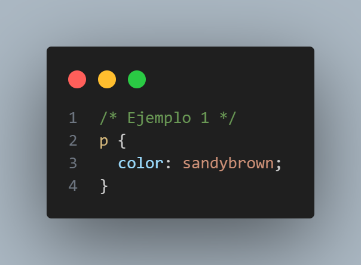
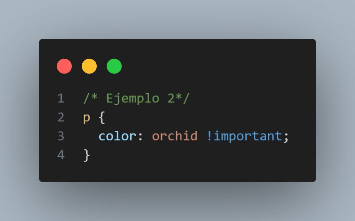
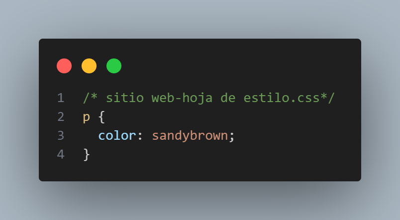

The Cascade CSS
¿Qué significa cascade?
CSS Cascade es una de las partes más poderosas de CSS. Todo aquel que halla trabajaado con CSS a lo largo del desarrollo de una pagina web se ha podido dar cuenta que a veces resulta un poco fustrante puesto que no entendemos el porque no se aplica dicha propiedad CSS
La Cascada CSS es la forma en que nuestros navegadores resuelven las declaraciones CSS que compiten entre sí.
Cada vez que se escriba una declaración (o regla) de CSS, entrará en la Cascada de CSS, lo que determinará si terminará o no como el estilo final. Cuanto más abajo en la cascada cae una declaración, menos probable es que termine como el estilo final.
Diferentes niveles de Cascade
Importancia
El primer nivel de Cascade analiza el tipo de regla que estamos analizando.
Existen 4 tipos basicos de reglas
-
Importance
-
transition
Las reglas que se aplican a una transición activa toman la mayor importancia -
!importante
Cuando agregamos !importantal final de nuestra declaración, salta a este nivel de la Cascada. Idealmente, reserve este nivel para Hail Marys, que son necesarios para anular estilos de bibliotecas de terceros. -
animation
que se aplican a una animación activa saltan un nivel en la Cascada. -
normal
Este nivel es donde vive la mayor parte de las reglas
Este nivel superior se reserva principalmente para garantizar que nuestros elementos se animen correctamente y para ayudar a los desarrolladores desesperados
Ejemplo( !important).De las siguientes reglas el ejemplo 2 gana esto se debe
 !importantlas declaraciones caen en el segundo nivel, mientras que las declaraciones normales caen en el cuarto nivel. -
transition
- Origin
-
website
Este es el único nivel sobre el que tienes control, como desarrollador web. - user
-
Navegador
Cada navegador tiene su propio conjunto de estilos, por lo que cosas como <button> tienen estilos predeterminados. -
Specificity
El tercer nivel de la Cascada analiza la Especificidad de una regla.
Hay cinco niveles de selectores:-
Estilos en línea
Declarados dentro de una stylepropiedad HTML son los más específicos
-
Estilos en línea
El segundo nivel de Cascade analiza dónde se definió la regla.
Hay tres lugares donde se puede definir una regla:
¡Alerta de hecho funky! La jerarquía aquí en realidad se invierte para !importantlas reglas, lo que significa que una regla !important predeterminada del navegador gana sobre una regla !important del sitio web (mientras que una regla del sitio web normalmente gana sobre el valor predeterminado del navegador ).
EJEMPLODe las siguientes ejemplos gana el primero puesto que declaraciones específicas del sitio web se encuentran en el primer nivel, mientras que los valores predeterminados del navegador se encuentran en el tercer nivel.
